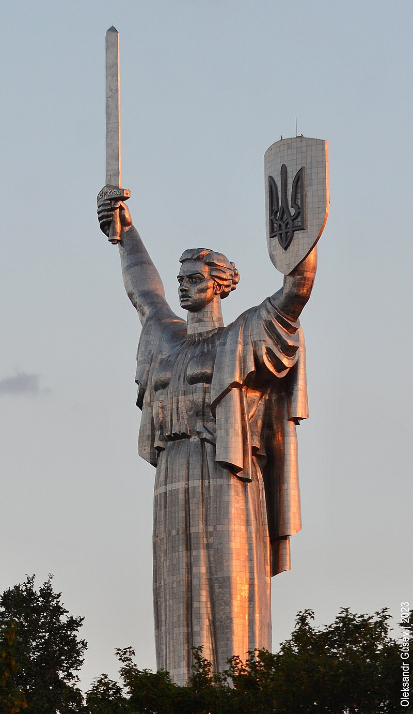
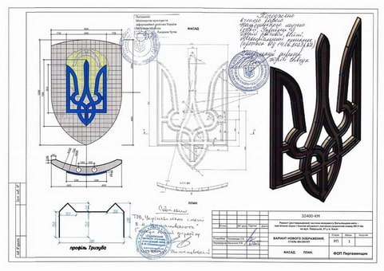

Батьківщина-Мати (Київ)
«Батьківщина-Мати» — монументальна скульптура в Києві. Офіційного рішення щодо перейменування монумента «Батьківщина-Мати» на «Україна-Мати» до 24 серпня 2023 року, як було заявлено напередодні, Міністерство культури та інформаційної політики України не ухвалило. Розташована на високому правому березі річки Дніпро, на території Національного музею історії України у Другій світовій війні. Відкрита у 1981 році. Є найвищою монументальною скульптурою в Європі. Автор монумента — український скульптор Василь Бородай.
Назва
Спочатку монумент замислювався як символ не Батьківщини, а Перемоги, проте назва «Батьківщина-Мати» увійшла до ужитку майже одразу ж після зведення
Проектування
Перший проєкт «Батьківщини-Матері» розробив ще у 1970-х роках скульптор Євгеній Вучетич з Москви.
За його проєктом, передбачалося вкрити фігуру жінки тонким шаром золота, щоб виблискувала на сонці, а нижче, на схилах, поставити напівоголених велетнів-вояків до 30 метрів заввишки.
У 1974 році, після смерті Євгенія Вучетича, проєкт взяв на себе український скульптор Василь Бородай, народний художник УРСР та СРСР. Він здійснив деякі зміни в проєкті скульптури та почав її будівництво. Також допомагали інші скульптори: Фрідріх Согоян та Василь Вінайкін, а також архітектори Віктор Єлізаров, Георгій Кислий, Микола Фещенко.
Спочатку передбачалося, що на постаменті підноситиметься 90-метрова бронзова з позолотою фігура жінки. Біля підніжжя статуї з 30-метрової висоти повинен був текти до Дніпра водоспад, з обох боків якого воїни форсували річку.
За словами Микити Кальченка, сина Галини Кальченко, прообразом монументу була не його мати, як багато хто стверджував.
Спорудження
Металевий каркас виготовлений зі сталі, яка була витоплена у Запоріжжі. Метал для цього монумента був виготовлений саме в Запоріжжі. Для цього були об'єднані зусилля місцевих підприємств: на «Дніпроспецсталі» виготовили нержавіючі злитки, а в прокатних цехах «Запоріжсталі» — перекочували в листи. У Києві сталеві компоненти збирали в одну конструкцію. В результаті вийшла унікальна за світовими мірками суцільнозварна скульптура, яка входить до переліку найвищих пам'ятників світу, випереджаючи американську
статую Свободи.
Скульптуру збирали стометровим краном, який був виготовлений спеціально для цього. Пізніше цей кран демонтували. Роботу з виготовлення скульптури доручили Київському заводі експериментальних машин, а виготовленням опорних каркасів, транспортуванням й монтажем блоків займався трест «Центростальконструкції». Роботи велися з урахуванням рекомендацій Інституту електрозварювання імені Євгена Патона. Частини скульптури перевозили вночі, щоб не привертати увагу людей.
Зварювальникам монумента «Батьківщина-Мати» платили 50 радянських карбованців на день (велика на той час сума), але оплата відповідала роботі, оскільки зварники обпікали собі очі від такої кількості невпинної роботи. Інженери ж отримували звичайну зарплатню, але були задоволені й тим, що будували одне з «чудес» Києва.
За час монтажу на скульптуру було накладено 30 км зварних швів.
Судячи з геодезичних інструментальних замірів, що проводяться щорічно монумент «Батьківщина-Мати» повинен простояти понад 150 років. За розрахунками, статуя може витримати навіть землетрус за шкалою до 9 балів.
Щоб перевірити стійкість скульптури, 10-метрову копію випробовували на міцність у Москві в найбільшій у СРСР турбіні.
Через близькість Великої дзвіниці Києво-Печерської лаври (висота 96,5 м), висоту монумента
зменшили до 102 м (початкова висота мала складати 108 м), але через те, що Велика дзвіниця
розташована на пагорбі, над рівнем моря «Батьківщини-Мати» на 12 метрів нижча Великої лаврської дзвіниці. Відкриття монумента планувалось 9 травня 1980 року, на 35-ту річницю перемоги над Німеччиною, але відбулося лише через рік. Вартість споруди — 2 млн радянських карбованців (за даними газети Сегодня)[6] або 12 млн карбованців (за даними краєзнавця Станіслава Цалика).
Експлуатація
9 травня 1981 року відбулося гучне відкриття споруди, на відкриття стометрового монумента «Батьківщина-Мати», яка стала новим символом Києва, приїхав Генеральний секретар ЦК КПРС Леонід Брежнєв. У 1987 році над Києвом пронісся сильний ураган, але статуя залишилася неушкодженою. Влітку 2002 року був дозволений підйом екскурсантів на майданчики відмітки 36 метрів та 92 метри. Проте після того, як у квітні 2003 року молодий чоловік впав з горішнього майданчика та розбився, доступ туристів був обмежений. У 2009 році була почата реставрація споруди.
Декомунізація
На початку лютого 2018 року було оголошено про плани проведення декомунізації монументу, в ході якої радянський герб на пам'ятнику буде змінено чи-то зрізанням, чи-то накладанням. У травні 2023 року розпочалася початкова стадія процесу заміни радянського герба на тризуб. Радянський герб на монументі «Батьківщина-Мати» має бути демонтований, тож готується проєктна документація, щоб зрозуміти, у який спосіб та як краще його знімати, які роботи там мають бути проведені. Міністерство культури та інформаційної політики України й дирекція музею для реалізації проєкту обрали монументаліста Олексія Пергаменщика, учня архітектора Василя Бородая. 18 травня скульптор з командою приступив до роботи. За його словами, він консультувався з Віктором Ющенком. Третій Президент України особисто допомагав створювати макет, що надали на розгляд у міністерство культури та Кабінет міністрів України. Під час проєктування використовувалися оригінальні креслення 42-річної давнини. 13 липня 2023 року українська влада офіційно дозволила декомунізацію скульптури. На щиті замість герба колишнього Радянського Союзу мав з'явитися тризуб. Міністерство інфраструктури України повідомило, що держінспекція архітектури та містобудування схвалила проєкт реконструкції монументу. Новий герб мала виготовити гірничо-металургійна компанія Метінвест, в якій повідомили, що монтаж тризубу розпочнеться у липні й закінчиться до 24 серпня 2023 року, коли Україна відзначатиме День незалежності. Вартість проєкту — 28 мільйонів гривень. Матеріал на Тризуб мав надати Запорізький металургійний комбінат «Запоріжсталь», але метал підприємства забракував Інститут сталевих конструкцій імені Шимановського, який робив висновки щодо навантаження й аеродинаміки сталевої конструкції. Відповідна інформація з'явилася 25 липня 2023 року на сайті Міністерства культури та інформаційної політики України, з чим не погодилися представники «Запоріжсталі», назвавши висунуті претензії упередженими та безпідставними. Натомість для конструкції використали бельгійський метал, який підходив за товщиною та кольором. Розмір Тризуба — 4,5 на 7,5 метрів, а вага майже така, як та попереднього герба — понад 400 або близько 500 кілограмів. Спонсорами проєкту погодилися стати 15 підприємств, зокрема «Нова Пошта», «Перша Приватна Броварня» та інші.
Сучасна інтерпретація образу монумента
Під час обговорення подальшої долі Батьківщини-Матері у рамках декомунізації висувалися пропозиції демонтувати монумент повністю. Однак вирішили зберегти комплекс, надавши йому інше ідеологічне забарвлення.
На думку монументаліста Олексія Пергаменщика, Батьківщина-Мати хоча та замислювалася як монумент, який прославляє радянську державу, водночас відсилає до часу зародження європейського класичного мистецтва. Композиція має риси античної скульптури. НА Батьківщині-Матері давньоримський хітон.
Вона схожа на скульптури з Парфенону — така ж сама зачіска, її стопи сховані під одягом.
А пропорції голови до тіла такі ж самі, як у Венери Мілоської. Дійсно автор Василь Бородай спеціально їздив у відрядження до Італії вивчати пластичне мистецтво античності. Нарешті, скульптура оздоблена коротким мечем, який давні греки називали акінаком та яким билися з ворогами давні мешканці України.
2023 року з'явилося народне тлумачення образу монумента. Берегиню на Печерських пагорбах почали порівнювати з образом Богоматері Оранти — «Нерушимої Стіни» у Софії Київській.
У час російсько-української війни знову звернули увагу, що Батьківщина-Мати обернена не на захід, звідки прийшли гітлерівські окупанти під час Другої світової війни, а на схід, з якого з давніх часів нападали на українські землі різні вороги — монголи 1240 року, більшовики 1918 року, російські загарбники 2014 року. Ще під час відкриття пам'ятника народився анекдот, що нібито радянський лідер Леонід Брежнєв з подивом спитав українського очільника Володимира Щербицького, чому українка підняла меч на Москву. Водночас Віктор Єлізаров, один з авторів, згадував, що у Києві дійсно існували побоювання такого сприйняття монумента московським керівництвом ще на стадії
його проєктування у 1974 році.
29 липня 2023 року гендиректор Національного музею історії України у Другій світовій війні Юрій Савчук заявив, що до 24 серпня монумент «Батьківщина-Мати» планували перейменувати на «Україну-Мати».
Вчена рада музею передала відповідне рішення на затвердження Міністерству культури та інформаційної політики. Однак урядовці зволікали впродовж місяця, так та не спромігшись вчасно завершити справу.
27 серпня виконувач обов'язків міністра Ростислав Карандєєв без пояснення причин лише констатував, що офіційного рішення щодо перейменування немає.
Характеристики
- Загальна висота монумента з постаментом — 102 метри.
- Висота скульптури «Батьківщина-Мати» (від п'єдесталу до кінчика меча) — 62 метри.
- В одній руці статуя тримає 16-метровий меч вагою в 9 тонн, а в іншій — щит розміром 13 на 8 метрів Тризубом
- Вся споруда — суцільнозварна та важить 450 тонн.
- Сам каркас починається на глибині 17,8 метра (від входу в музей). На цю глибину йде бетонний колодязь діаметром 34 метри.
- На щиті «Батьківщина-Мати» є оглядовий майданчик.
- В середині скульптури розташовані два ліфти: Один з ліфтів підіймається з дев'ятьма зупинками до самої «голови» «Батьківщини-Мати», в якій є люки й технічні майданчики. Можна піднятися в «руку» з щитом та в іншу — з мечем. Там теж є монтажні майданчики.
- На найвищій точці меча є спеціальний пристрій для гасіння коливань вітрового навантаження.
Цікаві факти
- В народі скульптуру («пам'ятник Перемоги») нарекли «Вікторією Петрівною» , чим водночас обігрувалося два поняття — латинське за походження слово «Victoria» (Перемога) та ім'я, по батькові дружини генерального секретаря КПРС Леоніда Брежнєва (Вікторія Петрівна Брежнєва, або як він її звав у своїх офіційних мемуарах — «Віка»).
- Лаврентійський пагорб, на якому розташовані музейний комплекс «Національний музей історії України у Другій світовій війні» та монументальна скульптура «Батьківщини-мати», вважається одним із головних геопатогенних місць Києва, однією з трьох «чорних гір» міста. За легендами, цього місця уникають птахи та тварини, а поселення, що зводилися там час від часу, гинули у пожежах та зсувах.
- 8 травня 2015 року голову скульптури прикрасили вінком зі стилізованих червоних квіток маку.
- Прообразом «Батьківщини-Мати» у 1972 році, за першим проєктом Євгена Вучетича, була художниця Ніна Данилейко.
- У листопаді 2021 року на сайті Київської міської ради була зареєстрована петиція з пропозицією переробити монумент у статую Архангела Михайла. Автор петиції вважав, що радянський монумент суперечить політичним та ідеологічним поглядам та вимогам сучасності.
- Під монументом Батьківщини-матері є велике приміщення, яке здатне умістити понад 400 осіб.
- У створенні тризубу, яким замінили радянський герб на монументі «Батьківщина-мати», особисту участь взяв третій президент України Віктор Ющенко, який особисто допомагав створювати макет, що згодом перетворився у скульптурну форму, — про це в ексклюзивному інтерв'ю повідомив автор тризубу Олексій Пергаменщик.
Відвідування
Головна експозиція монумента працює з 10:00 до 18:00 (вівторок — неділя, у понеділок — вихідний), але каса відкрита з 10:00 до 17:30. Вхідний квиток коштує 40 ₴ для дорослих, 20 ₴ для студентів та 10 ₴ для школярів. Додатково оплачується оглядова екскурсія «Україна. Війна. Власна пам'ять», є можливість придбати сімейний квиток або скористатися аудіогідом. Докладніше про розцінки та можливості для відвідування можна прочитати на офіційному сайті музею. У монументі відкриті для відвідування два оглядових майданчики. Один — «Краєвид» — розташовується на висоті 36,6 метра навколо підніжжя постаті-скульптури. Зі східного та західного боків встановлені військові біноклі для оглядання навколишнього міста. Другий, «Екстрим», розташований на рівні 91 метра над підніжжям та працює за умов гарної погоди. Обидва оглядові майданчики працюють з 10:00 до 17:30 в будні, до 18:30 у вихідні.